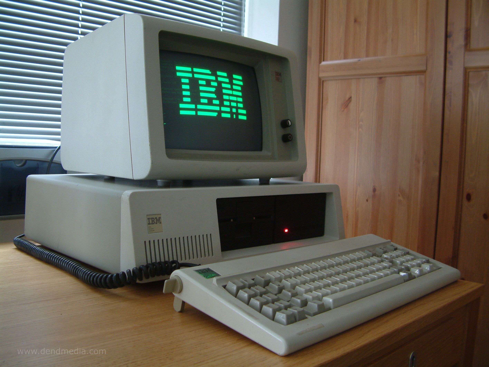
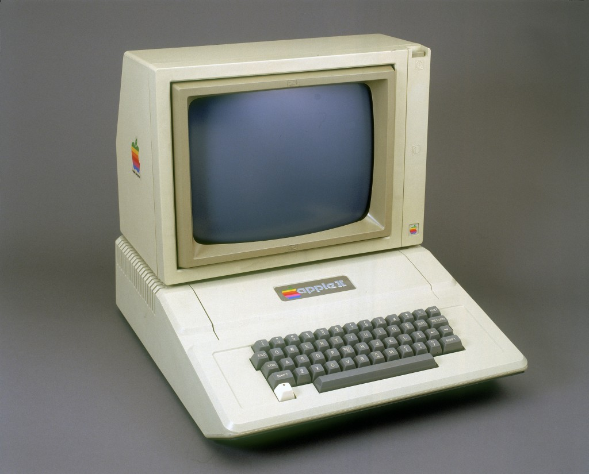

Computers in the past were so much more different than these nowadays, that you will not recognize them.
The first feature of computers also provided their name.
Computing accepts inputs and generates outputs. In World War II, it aided physicists creating
the first atomic bomb and intelligence offers deciphering enemy communications. These scientists
could have done the work by hand but computers automated
repetition and minimized human error by providing the computer with a set of instructions (a computer program).

